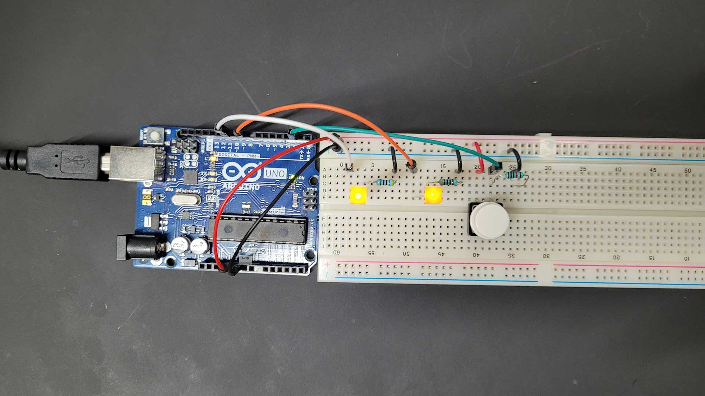
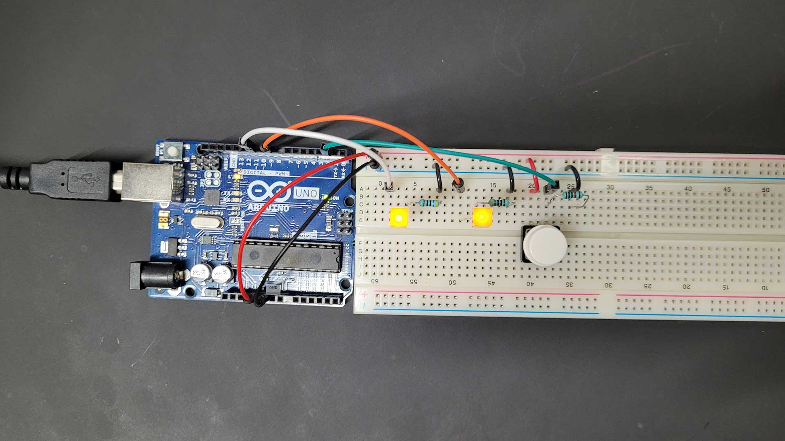
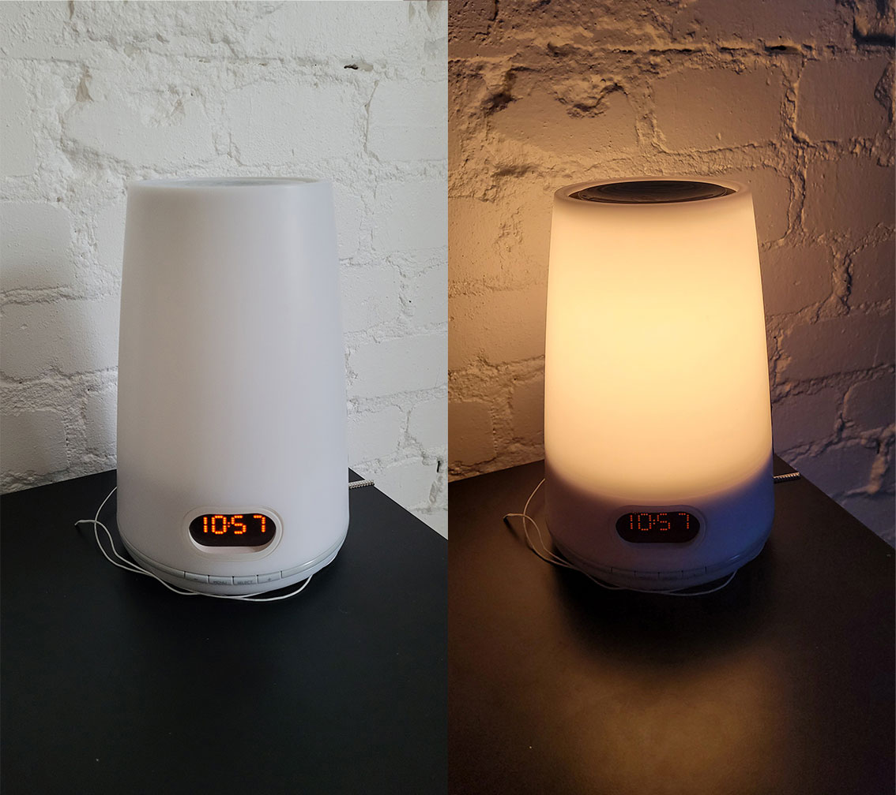
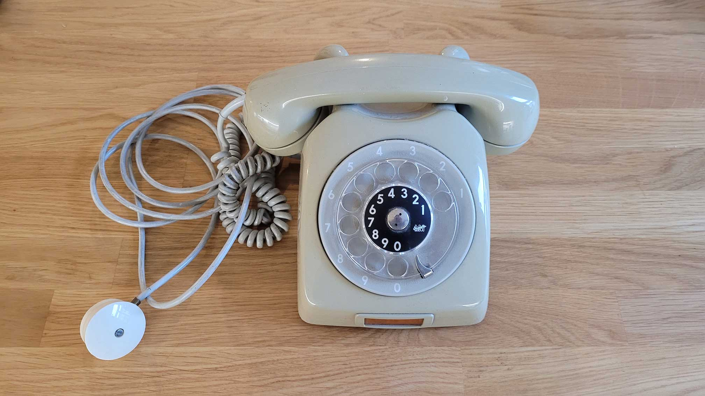
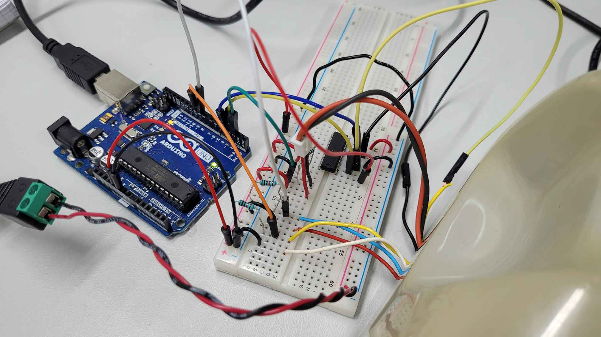
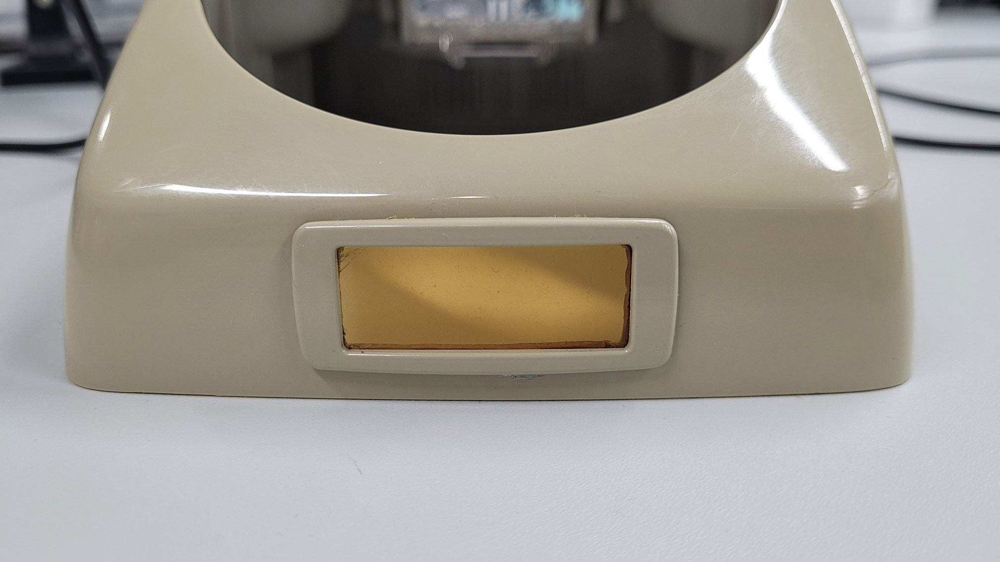

Physical Computing—Tino Selic
Course Documentation
Creating an alarm clock by recycling an old rotary dial telephone
1. Introduction
Posted 25.10.22

With the knowledge I remembered from class, high school physics class and my first (unsuccessful) studies in
electrical engineering, I started to draw a first circuit diagram. I then collected the parts I needed and built
the circuit according to my drawing. I chose to work with digital pins 2 and 4, because they didn't have the ~
symbol. I haven't figured out what that symbol stands for, I'm guessing it's alternating current (AC). Also, I
didn't know how to involve the connection to the Arduino in my circuit drawing at this point.
I pressed the button, but nothing happened. I checked the board and it turned out that the LEDs were pointing
the wrong direction - a problem I still run into often. I fixed the problem and both LEDs turned on, when I
pressed the button. A first small success, but not really the expected outcome of the assignment. When I opened
up the Arduino programming software and tried to access LEDs and the button with the Arduino pins, I realized
that I was missing a lot of theoretical understanding. Fortunately, Matti provided a clear and comprehensive
tutorial on the course
website, that provided all the information I needed to complete the assignment.
I learned how to set up the circuit properly, reading the signals from the LEDs and the button and storing
signal changes as states. The final challenge for me was figuring out the correct syntax of my code. The key was
understanding how to save the button state as pressed and released.
 

2. Sensing the World
Posted 07.11.22

“FLUX is an alt.arcade reaction game, where players compete against one another to hit 5 buttons in the right
order as quickly as possible.” - https://www.wethrowswitches.com/flux
This project caught my attention because it seems simple but fun and it looks cool. Judging by the pictures this
game could very well be placed at festivals or in bars / nightclubs as the surface seems sturdy and can act as a
table for glasses etc. FLUX uses buttons and lights - the first components we started to work with in the
beginning of this course.
FLUX's game design is based on the 80's classic “Simon”, where the player has to memorize and repeat a pattern
by hitting the correct buttons of the device. With every successful repetition, the game is getting harder.
Both FLUX and Simon use buttons as inputs and lights as outputs. Wouldn't it be interesting if this mechanic
could be somehow reversed? Replacing buttons with photoresistors turns light into an input.
This could be realized with a monitor made of multiple photoresistors arranged in a grid. A separate screen would display a specific pattern or shape for a limited time. The player would then have to memorize the image and recreate it by using a flashlight as a controller to “draw” on the light sensor monitor. Just like in Simon, this game would get harder with every successful repetition as the images would get more and more complex.
3. Making Things Move
Posted 13.11.22

I came up with the idea for my project, when Matti introduced the rotary dial mechanisms of old telephones and how they can be used as potential inputs. I want to turn an old rotary dial telephone into an alarm clock and this is how it is supposed to work: the rotary dial is used to set up the time of the alarm. When the alarm goes off, the telephone starts ringing and it only stops, when the phone is picked up.

Like many other people, I find it difficult to get up early in the morning. Especially during autumn and winter here in Finland the days get really short and the mornings are dark. For this reason, I am using a light alarm clock (also called “wake-up light”) that makes it easier to wake up and get out of bed during dark times. Ideally, I manage to transform the telephone not only into an alarm clock but also into a light alarm clock.

MUST HAVE
The telephone must have a display that shows the time of clock and alarm. It must also have buttons for navigating (“Select” to switch between options and “Enter” to confirm the selection). The rotary dial must be used to set up the time of the clock and the alarm, and the original ringing sound of the telephone must be the alarm sound. Furthermore, picking up the phone must dismiss the alarm.
SHOULD HAVE
To turn the telephone into a wake-up light the telephone should also have a connection to a light source. 30 minutes before the alarm, the light should start to brighten continuously like a sunrise until it is at full brightness, when the alarm goes off. A LED strip should work well for this.
COULD HAVE
The telephone could have options to turn the light on and off and maybe even to adjust the brightness of the light. These information could be shown on the display. Another extention could be to replace the build-in speaker and mikrophone of the phone with two bigger / louder speakers. I could then choose any audio I like to play as the alarm sound.
4. Communication
Posted 21.11.22

I chose to work with the rotary dial mechanism and the idle switch of Matti's red example telephone, because it is relevant for my final project. The idle switch is triggered when the handset is lifted or placed back on the telephone - basically like a simple button. For this reason I chose Arduino pin 2 to read its signal and added a 10k resistor to prevent a short circuit. The rotary dial on the other hand was harder to figure out. Matti explained to me that the dial returns a number of pulse signals depending on the number dialled. He knew which wires were the correct ones to read the signal of his telephone's dial (red and blue). To be sure we tested the signal with the multimeter. With the knowledge gained I connected the dial's wires with the breadboard and I chose Arduino pin 9 to read its signal.
This video helped me a lot to understand the mechanism in detail and how to set up the code.

In this process I learned how to use the bounce library that helps to prevent signal noise. The main idea of the code is to swich between two states: idle and dial. Idle is the state when the handset is placed on the telephone. Dial is the state when the handset is lifted and the user can dial in a number. By placing the handset back on the telephone (or by simply pressing the switch) the user can confirm the last dialled number. This number will be printed out in the console. I then set up a code in processing that communicates with the Arduino and visualizes the dialled number as a bigger graphic.

I uploaded the first version of my code onto the Arduino but unfortunately nothing happened. I couldn't find the mistakes by myself, so I asked help from my fellow student Aditya. With his help I made changes of the order of things to happen in my Arduino code. Another try, another failure. Aditya then took a close look at my circuit and found that the idle switch was not properly connected. The red wire was supposed to be connected to the 5V power source coming from the Arduino, but instead I accidentally connected it to ground where I already had a connection - ergo: no current flow. After I fixed that, everything worked fine.
5. Project Work: Setting Up My Own Telephone
Posted 25.11.22

Matti told that these kinds of old telephones can be found in thrift stores or recycling centers all over Helsinki and are sold around 5-10 €. So I began my search and eventually found and bought one by the Swedish brand L. M. Ericsson for 6 € at Metka kirpputori.
The telephone seemed to be in good shape and I was pleased with the good deal I got. A small downside was that I had to clean it because it was really dirty in some places. Luckily, it was a similar model to the one Matti showed us. So I knew how to open the case by using a flat-head screwdriver to remove a screw on the backside of the telephone's case.
Once the case was open my goal was to make space for the Arduino and other components that will be added throughout the project. With the same screwdriver I then disconnected the cords of the power supply and the handset.
I repeated the same thing on the other side of the telephone by disconnecting all the wires of the other components (rotary dial, idle switch, bell).
At this point I was finally able to take a closer look at each individual part. Inside the phone was also a wiring diagram from 1967.

I separated the idle switch from the circuit board by desoldering the pins from the connections. It turned out to be quite tricky as the pins' ends were a little bent like hooks. I had to use the screwdriver and blunt force to get the pins out.
By using the multimeter I checked the connectivity of the pins to figure out which pins I would use for my project. I then soldered a red wire to one pin and a black wire to the other pin.
Finally, I connected the phone to my arduino and tried the code from assignment "04 | Communication". Everything worked perfectly and I was happy.
6. Project Work: Switch Cases and Bell
Posted 02.12.22
When I was showing my project to our tutor Calvin, we were thinking together about how to access different modes by using the rotary dial. He then explained to me how I could create 10 different modes (idle, alarm, lights, etc.) by dialling in numbers from 0 to 9. I could then confirm the number I dialled by picking up the telephone or putting it back on the telephone. This made me realize that I actually don't need any extra buttons like in my original concept. In code, I would use the Switch/Case structure to select and switch between different modes.

I wanted to use the build-in bell as the alarm sound for my alarm clock, so I located its wires (black and yellow) and began to think how I can make it work.In order for the small hammer inside the bell to move left and right to alternately strike the two bells, current must flow into the bell from alternating directions. Matti explained to me that I have to use an H-bridge for this. I connected everything with the Arduino and used the 7,5 V battery block to power the bell. I then tested the bell by using the code from the YouTube video of post "04 | Communication", but the bell barely reacted. Matti then told me that 7,5 V are not enough for the bell. We switched to a 9 V power supply and the bell started ringing.
7. Project Work: Final
Posted 05.12.22
Matti ordered the RTC (Real Time Clock) module DS1307 and a small 128x32 pixels OLED display for me. When they arrived I connected them to my Arduino Uno.
This video really helped me understand how to set up the RTC as an alarm clock using Arduino code.
Once the clock and display worked as desired, I began planning the space and wire management inside of the telephone. For some parts like the bell I needed to extend the wires.
I soldered everything together on a Qwiic shield that I then connected with the Arduino Uno. The hardest part was figuring out the correct connections of the H-bridge and the power supply.
The bottom and other parts inside of the telephone are made of conductive brass. To protect the Arduino from short circuits I covered it with foam sheet. I then placed the Arduino on the side next to the rotary dial and it just fitted.

I cut out a window for the screen in the small area originally used to remember the phone number. I re-applied the frame and protective film to protect the display a bit and keep the telephone's vintage look.
Finally, I used hot glue to fix the display to the right spot on the bottom of the telephone. I uploaded my code to the Arduino, put the hood back on and my project was completed.
8. Reflection
Posted 13.01.23
Looking back on my original concept, I've managed to meet the must-have requirements of an alarm clock. I wasn't able to expand on features like the LED strip or use the phone's headset built-in speaker and microphone. Still, I think the RD:AC turned out really well, especially judging by the looks. I'm also pleased to have been able to revive a dying electronic device, as younger generations may not even know what a rotary telephone is anymore. Even I only know it from my childhood when I used it as a toy to play with instead of a phone. The interaction with the rotary dial is slow but fun and a nice alternative to buttons and touch interfaces. Last but not least, I want to thank my course teacher Matti, my tutor Calvin and workshop master Janne.